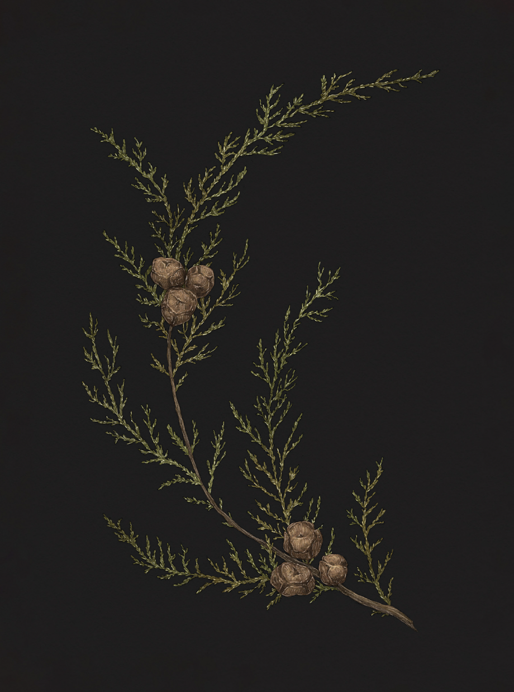

Plate CYPRESS
The Language of Flowers
Cypress Study

Cypress
Cupressus
Definition: A tree associated in floriography with death and mourning.
Meaning
- Death
- Mourning
Origin
The cypress tree has been a symbol of mourning and death since classical antiquity, and it remains
the tree most commonly planted in cemeteries in both Europe and the Middle East. In the Greek myth
from which the tree gets its name, Cyparissus accidentally killed his beloved companion, a tame stag.
He was so overcome by grief that he was transformed into a cypress tree.
Pair With
- Marigold and Ivy for a grieving friend
- Orange Blossom to indicate your eternal devotion to a recently deceased loved one